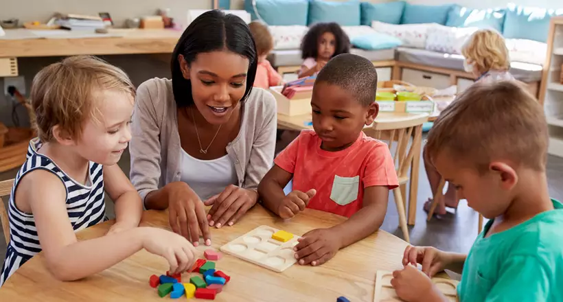

Projetos Sociais

Nossos projetos abrangem educação, saúde e inclusão social. Cada iniciativa visa fortalecer comunidades e gerar oportunidades para todos.
Como Ajudar

A Conexão Solidária acredita que pequenas ações podem gerar grandes transformações. Nossos projetos sociais são voltados para a educação, o voluntariado e a solidariedade, sempre com o propósito de construir um futuro mais justo e humano.